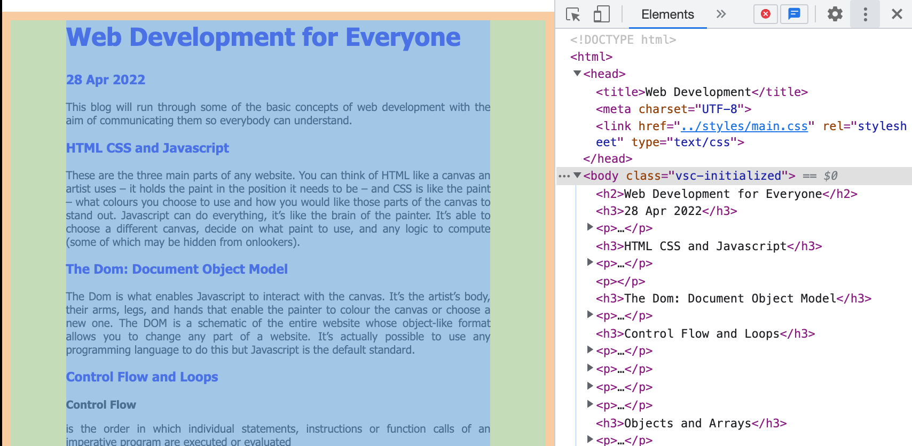
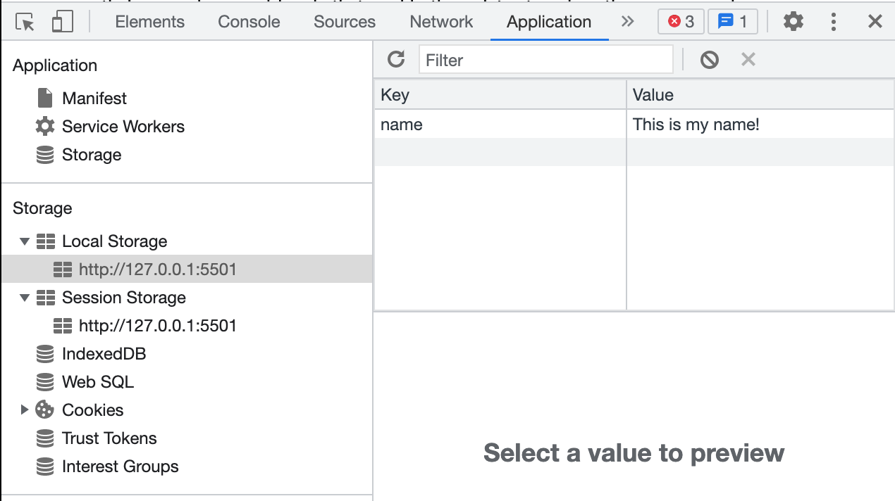

This blog will run through some of the basic concepts of web development.
These are the three main parts of any website. You can think of HTML like a canvas an artist uses – it holds the paint in the position it needs to be – and CSS is like the paint – what colours you choose to use and how you would like those parts of the canvas to stand out. Javascript can do everything, it’s like the brain of the painter. It’s able to choose a different canvas, decide on what paint to use, and any logic to compute (some of which may be hidden from onlookers).
The Dom is what enables Javascript to interact with the canvas. It’s the artist’s body, their arms, legs, and hands that enable the painter to colour the canvas or choose a new one. The DOM is a schematic of the entire website whose object-like format allows you to change any part of a website. It’s actually possible to use any programming language to do this but Javascript is the default standard.
In Javascript, data accessed from arrays is done so sequentially. That means that if you had a shopping list and wanted to find the fourth item on the list, you would have to go through the first three items. In contrast, data accessed from javascript objects is done directly. But how do we know where the fourth item is without counting? The way it works is with hashing functions and hash tables. We input what we are looking for into the hash function and out comes the location like magic. You can imagine it as if our supermarket shopper has made a rule where they only put 7 items on the page. When we search for the fourth item, we put that into the rule, and then out comes the perfect location (in this case exactly in the middle of the page).
Control Flow
is the order in which individual statements, instructions or function calls of an imperative program are executed or evaluated
Loops
Repeat a control flow for a decided number of iterations therefore loops are included in the control flow and are stitched together for each loop
Functions, or more specifically programmatic functions, are repetitive procedures whose process always remains the same. They often have some kind of input and output. For example this function takes an input and returns the 2 times the inputNumber:
function doubleInput(inputNumber){
return (2 * input)
}
Dev Tools
You can see a visual representation of the DOM by using Google Chrome's developer tools.
On the right we have the visual representation. You can open and close all the data like an object and it will show you where it corresponds on the page. In this example, I have highlighted the body element and you can see the orange margin, the green padding, and the blue content
Run Snippets
You can save script to be run on any website you like. Go to developer tools/ source/ create snippet. You can also use the snippet tool as a text editor!
Local Storage
Local Storage allows you to keep data held on the browser long after the browser is closed or you've changed website. The Dev Tools give you a nice way to explore different types of storage. Add the lines of code to your script (except for localStorage,clear), go to developer tools/ Application/ Local Storage
localStorage.setItem('name', 'Hello')
console.log(localStorage.getItem('name'))
localStorage.clear('name')

Session Storage
This works much like Local Storage except the data is cleared when your browser is closed or website changes
sessionStorage.setItem('name', 'Liam')
Cookies
document.cookie("username=John Doe")
Back to main